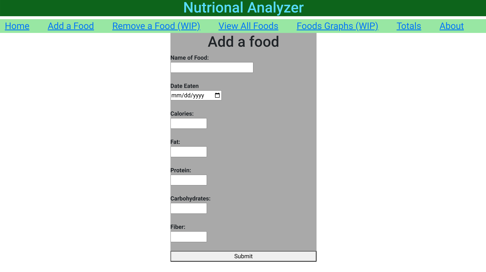
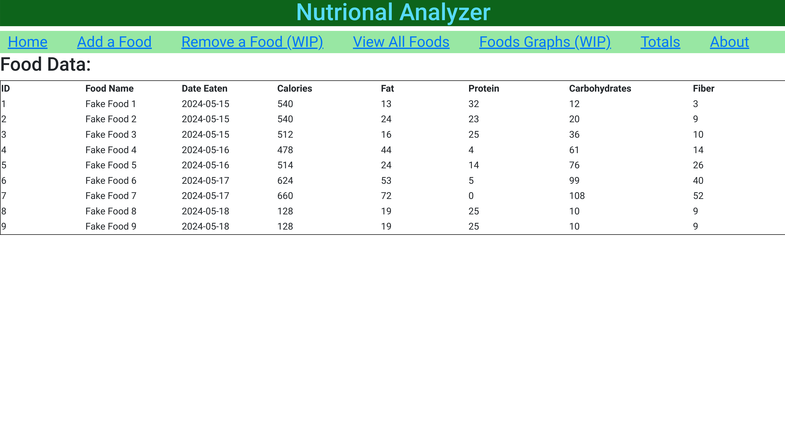
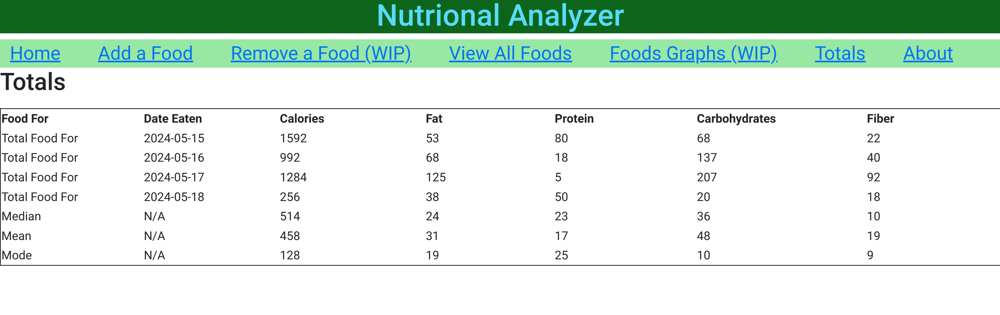

Michael McGaffick
Computer Science Graduate, Aspiring Software Developer
Nutritional Analyzer (Work in Progress) April 2024 - Current
About
This personal project is designed for me to learn to use React and Spring Boot. This project allows the user to enter food nutritional information and then get basic statistics such as mean, median, mode, and totals for the values enter per date. It uses Rest APIs to communicate between the JPA Repository in the Spring BackEnd to the React front-end. It is written in Java, HTML, JavaScript, and CSS.
Add A Food
This page allows the user to enter food data, the date eaten, and the name of a food. It then sends the data over Rest APIs to the spring backend and stores it in a JPA repository.
View All Food
This page allows the user to view the contents of the JPA repository through another API post call. It shows the id values, the name of the food, the values entered for the food, and the date.
Totals
This page currently gets the total values per date for all the foods' values. It also provides the individual mean, median, and mode for the data set.
Gallery


